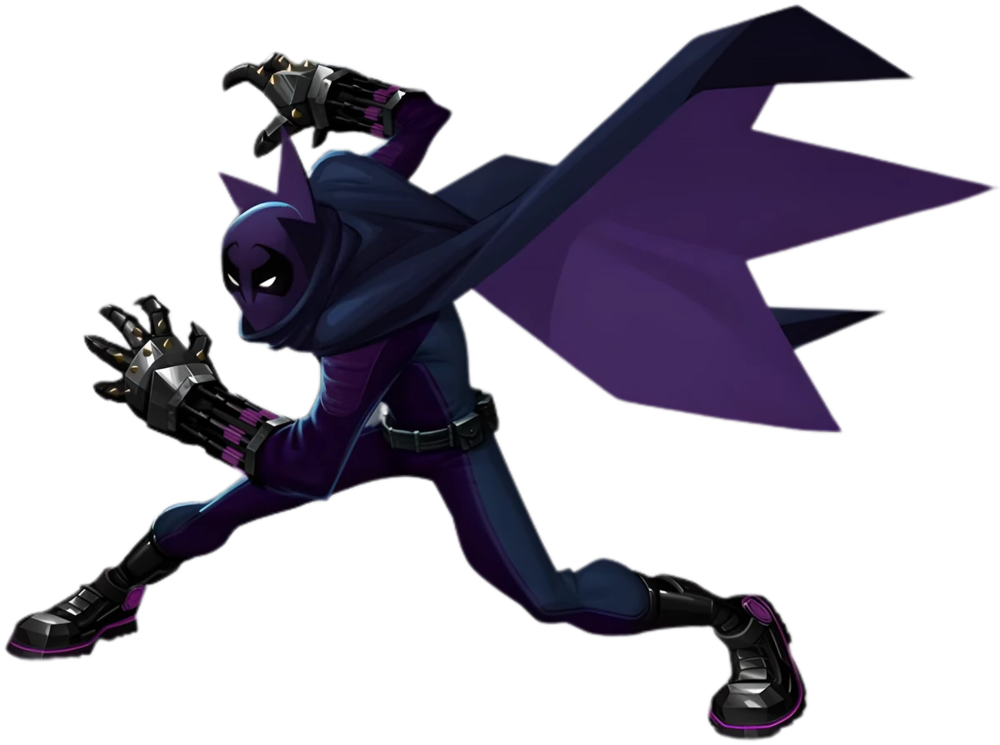

"Spider-Man: Beyond the Spider-Verse" es una película de animación de superhéroes próxima a estrenar en 2024, dirigida por
Joaquim dos Santos, Kemp Powers, Justin K. Thompson. Es la secuela de "Across the Spider-Verse" y última entrega de la saga.
Miles deberá resolver los conflictos y enfrentar el destino en una línea de tiempo diferente a la de él donde se enfrentará a sí mismo y a la Spider-Society.
La película sedguramente se destacará por su innovadora animación y estilo visual único que combina técnicas de cómic con animación tradicional, creando una experiencia visualmente impresionante y aclamada por la crítica.
"Spider-Man: Beyond the Spider-Verse" será probablemente el final de la historia de Miles Morales y el Spider-Verso a no ser que Marvel tenga interés de incluir el Spiderverso al UCM.

Miles Morales es un adolescente afroamericano y latino que vive en Brooklyn.
Es Spider-Man y el Merodeador. Es un joven talentoso y carismático, pero también enfrenta los desafíos típicos de la adolescencia, tratando de encontrar su lugar en el mundo y encajar en una nueva escuela privada. La vida de Miles da un giro inesperado cuando se encuentra con una araña radioactiva y, de repente, adquiere poderes similares a los de Spider-Man.
A lo largo de la película, probablemente Miles se deberá enfrentar a sí mismo y a su tío si quiere salvar a tiempo a su padre.
“Los mejores villanos de cualquier historia son los que tienen problemas similares a los del personaje principal”, dice la productora Amy Pascal. “La Mancha es un personaje que está lleno de agujeros negros, literalmente, y está tratando de llenar esos agujeros, en sentido figurado, a lo largo de la película. Su camino es similar al de Miles, y eso es lo que hace que su historia se entienda tan bien”.
Cómo bien señala el escritor y productor Christopher Miller, el Dr. Ohnn estaba en el súper colisionador que Miles y sus amigos hicieron explotar en la primera película, y fue entonces cuando quedó cubierto de materia oscura y se convirtió en este personaje con tantos agujeros y portales en su interior. “Al principio da la impresión de ser un villano torpe, uno de bajo nivel. Pero cuando descubre que puede usar esos agujeros para viajar entre dimensiones, se vuelve cada vez más poderoso y se convierte en un enemigo verdaderamente temible”.
“Al principio La Mancha no se da cuenta del potencial ilimitado de sus poderes”, menciona el director Joaquim Dos Santos. “Creo que esa es la clave que hace que este personaje sea tan encantador, aunque acabe significando que se convierta en el némesis de Miles. Si le vieses caminando por la calle te parecería un tipo loco vestido con un traje de licra blanca cubierto de lunares. Aunque estamos en la ciudad de Nueva York, aquí la gente ni siquiera pestañea cuando ve a alguien loco por la calle. El hecho de que al principio no le tomen en serio hace que se convierta en esa persona más adelante. Él quiere hacerse notar, por las buenas o por las malas”.

Peter B. Parker es una versión madura y desaliñada de Spider-Man que proviene de una realidad alternativa. Es miembro de la Spider-Society.
Sin embargo, se cree que formará equipo con Miles.
Gwen Stacy, conocida como Spider-Woman o Spider-Gwen proveniente de una realidad alternativa, es una adolescente con una actitud fresca y valiente. Gwen se convierte en una heroína después de ser mordida por una araña radiactiva, desarrollando habilidades similares a las de Spider-Man. Su traje distintivo es blanco y rosa, reflejando su estilo único.
Como Spider-Woman, Gwen es ágil y experta en combate, usando sus habilidades arácnidas para proteger su ciudad de peligros. Formaba parte de la Spider-Society al ser expulsada de ella.
Se cree que formará equipo con Miles.


Peter Porker, también conocido como Spider-Ham, es un personaje hilarante y peculiar en "Spider-Man: Into the Spider-Verse." Proveniente de una dimensión de dibujos animados, Peter es una versión antropomórfica de Spider-Man que posee habilidades arácnidas, ¡pero también el ingenio de un cerdo!
Con su traje de superhéroe clásico, Spider-Ham combina la valentía de Spider-Man con un humor desenfrenado. Aunque parece una parodia cómica, sus habilidades son genuinas, como lanzar telarañas y esquivar peligros con agilidad porcina.
Peter tiene una actitud relajada y un enfoque despreocupado ante la vida, lo que contrasta con la seriedad de otros Spider-Men. Su presencia cómica y sus ingeniosos chistes alivian la tensión en situaciones difíciles. Sin embargo, detrás de su exterior cómico, demuestra ser un aliado valioso y leal.
Durante la misión para salvar las realidades, Spider-Ham muestra su lado serio y se enfrenta a desafíos inesperados. Su capacidad para equilibrar el humor con el heroísmo hace que sea un miembro único y esencial del equipo.
Forma parte de la Spider-Society, aunque se cree que formará equipo con Miles.
Peter Parker Detective (Tierra-90214B) es una versión alternativa del icónico héroe arácnido. En esta realidad, Peter es un detective privado que se ha enfrentado a los desafíos de ser Spider-Man durante muchos años. Su experiencia lo ha convertido en un veterano en la lucha contra el crimen, y su actitud es más seria y sombría en comparación con otros Spider-Men.
A diferencia de la imagen clásica de Peter Parker, esta versión tiene una barba de varios días y lleva una gabardina y sombrero característicos de un detective de cine negro. A pesar de los reveses que ha enfrentado, todavía tiene un corazón noble y un fuerte sentido de la responsabilidad para proteger a los inocentes.
Cuando se une al grupo de Spider-Men para enfrentar la amenaza interdimensional, Peter Detective aporta su experiencia en combate y astucia detectivesca. Sin embargo, también carga con el peso de sus fracasos pasados, lo que lo lleva a dudar de sí mismo y cuestionar su papel como héroe. A lo largo de la película, Peter Detective encuentra redención y aprende a abrazar su legado de Spider-Man una vez más.
Forma parte de la Spider-Society, aunque se cree que formará equipo con Miles.


Peni Parker (Tierra-14512B) es una joven y talentosa piloto de mecha japonesa que se ha convertido en la portadora del SP//dr, un traje mecanizado impulsado por una araña radioactiva. Peni proviene de una realidad alternativa de estilo anime y, a diferencia de otros Spider-Men, comparte un vínculo psíquico especial con su compañera arácnida, que se encuentra en el núcleo del SP//dr.
Criada por su tío Ben y tía May después de que sus padres pilotos fallecieran, Peni es una piloto experta y una hábil combatiente, lo que le permite defender a su ciudad de las amenazas que se presentan. Su traje mecanizado no solo le otorga habilidades sobrehumanas, sino que también le permite controlar el mecha de manera fluida y precisa.
A pesar de su juventud, Peni es valiente y decidida, asumiendo la responsabilidad de ser una heroína y seguir los pasos de sus padres como piloto del SP//dr. Su conexión con su arácnido compañera es un recordatorio constante de la importancia de la familia y la tradición, y aporta una emocionante dimensión emocional a su personaje en "Spider-Man: Into the Spider-Verse." Con su estilo único y su destreza en combate, Peni Parker agrega una perspectiva intrigante y emocionante al equipo de Spider-Men interdimensionales.
Forma parte de la Spider-Society, aunque se cree que formará equipo con Miles.
Miguel O'Hara, también conocido como Spider-Man 2099, es el lider de la Spider-Society. Miguel trata de detener a Miles a toda costa al enterarse que éste no debía ser un Spider-Man.
Con su traje azul y rojo y su característica araña tatuada en la mano, Spider-Man 2099 lucha contra la injusticia en un mundo distópico. Posee habilidades similares a las del Spider-Man original, como agilidad sobrehumana, fuerza aumentada y la capacidad de trepar paredes. Sin embargo, también cuenta con nuevas habilidades, como garras retráctiles y la capacidad de desplegar alas para el vuelo, gracias a su avanzado traje tecnológico.
Aunque inicialmente es un héroe impulsado por la venganza, Miguel O'Hara encuentra su propósito y responsabilidad como protector de la ciudad. A lo largo de sus aventuras, enfrenta amenazas poderosas, como la corporación Alchemax y otros villanos futuristas. Con un fuerte sentido del deber y un corazón valiente, Spider-Man 2099 se convierte en un símbolo de esperanza para el futuro distante de la humanidad.
Junto a su Spider-Society, Miguel será de los principales antagonistas y villanos de la saga.

Merodeador, también conocido como Miles Morales, es un supervillano. Antes de convertirse en Merodeador, este Miles estaba destinado a convertirse en Spider-Man, pero la araña que lo iba a picar, viajo a la dimensión de nuestro Miles, invirtiendo los roles.
Con un traje de escorpión verde y una cola venenosa, Merodeador es una formidable amenaza para Spider-Man y la ciudad de Nueva York. Posee una fuerza sobrehumana, agilidad y velocidad mejoradas, así como garras afiladas que pueden cortar casi cualquier material. Además, su cola contiene un potente veneno que puede incapacitar a sus oponentes.
A lo largo de los cómics, Merodeador se ha unido a varios equipos de supervillanos, incluyendo los Seis Siniestros, y ha sido un adversario recurrente de Spider-Man. Su obsesión por vengarse del trepamuros lo lleva a cometer actos malévolos y a participar en numerosos enfrentamientos, lo que lo convierte en uno de los enemigos más peligrosos y memorables del Hombre Araña. Mas tarde se revela que Miles debía ser el Merodeador y no un Spider-Man.
Jefferson Davis es el padre de Miles Morales. Es un hombre afroamericano con una personalidad fuerte y protectora. Como oficial de policía, tiene un fuerte sentido del deber y la responsabilidad para mantener a su comunidad a salvo. A lo largo de la película, se muestra como un padre cariñoso y preocupado por el bienestar de su hijo.
Jefferson es un personaje comprensivo y comprometido con su familia, pero también tiene sus propias luchas internas. Su relación con Miles es cálida y cercana, aunque a veces puede ser sobreprotector. A medida que la historia avanza y Miles se convierte en Spider-Man, Jefferson se enfrenta a la revelación de los poderes sobrenaturales de su hijo y debe aprender a aceptar y apoyar su camino como héroe.
El papel de Jefferson en la película no solo muestra su faceta como padre, sino también como un miembro respetado de la comunidad y un defensor de la justicia. Su carácter representa la importancia de la familia, la lealtad y la valentía frente a los desafíos que enfrentan en un mundo lleno de peligros y responsabilidades.
Está destinado a morir por el canon, y Miles hará todo lo posible para evitarlo.


Rio Morales es la madre de Miles Morales. Es una mujer latina con una personalidad cariñosa y comprensiva. Como enfermera, se muestra preocupada por el bienestar de los demás y siempre está dispuesta a brindar apoyo y cuidado a quienes lo necesiten. A lo largo de la película, se la ve como una madre devota y dedicada a su familia.
Rio es una figura materna fuerte e inspiradora para Miles. Su relación con él es cercana y afectuosa, y siempre está allí para apoyarlo en los momentos difíciles. A medida que Miles descubre sus nuevos poderes como Spider-Man, Rio lo alienta a ser valiente y a creer en sí mismo, demostrando un amor incondicional por su hijo.
El papel de Rio en la historia también destaca su importancia como una figura representativa de la comunidad latina en la película. Su carácter encarna los valores de la familia, el cuidado y el amor, y su presencia agrega una capa de diversidad y representación cultural en la narrativa. Rio Morales es una madre excepcional y un ejemplo de fortaleza y apoyo para Miles en su camino hacia convertirse en un héroe.